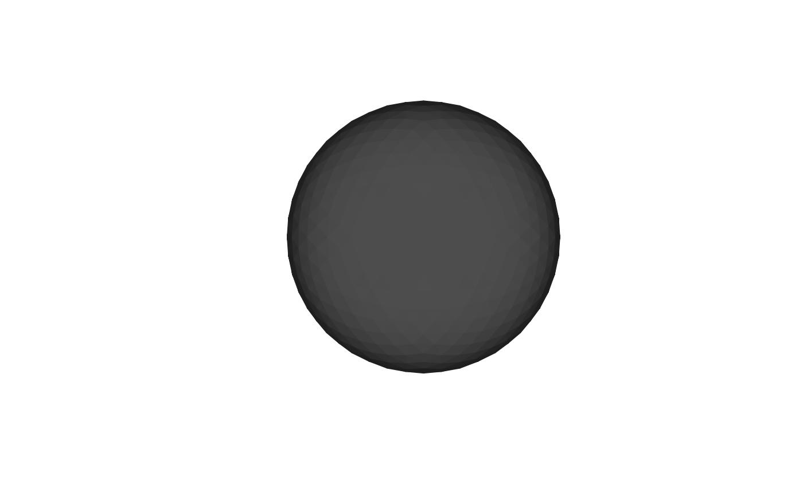
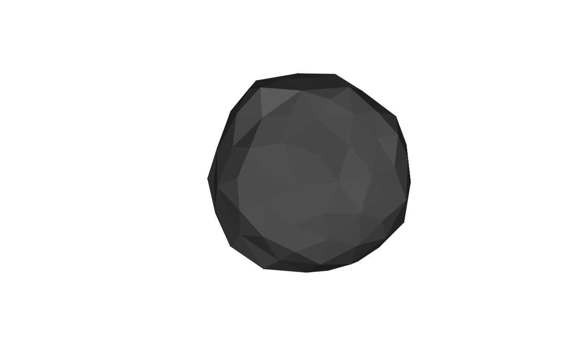

Re-triangulates a closed surface mesh so that all edges approach a uniform target length, improving triangle regularity and quality without changing the surface topology or shape. The output has a different vertex and face count than the input but closely tracks the original surface geometry.
Usage
mris_remesh(
mesh,
target_edge_length = NULL,
niterations = 5L,
n_smooth = 2L,
damping = 0.99,
verbose = FALSE
)Arguments
- mesh
triangular mesh of class
'mesh3d'(or coercible viaensure_mesh3d). The mesh must be closed, manifold, and genus-0 (watertight, no boundary or non-manifold edges, single connected component);mris_remeshraises an error if such defects are detected- target_edge_length
numeric; desired uniform edge length in the same units as
mesh$vb. DefaultNULLuses the current average edge length (quality improvement without size change)- niterations
integer; number of split/collapse/smooth iterations. Default
5- n_smooth
integer; number of tangential-smooth passes per iteration. Default
2- damping
numeric; fraction of the tangential displacement applied at each smooth pass (between 0 and 1). Default
0.99- verbose
logical; print per-iteration vertex and face counts. Default
FALSE
Value
A 'mesh3d' object with vb, it, and
normals. Vertex and face counts differ from the input; the surface
geometry is preserved.
Details
Each iteration applies three steps following the procedure described in the References:
Edge split: every edge longer than \(4/3 \times \code{target\_edge\_length}\) is split at its midpoint. One-edge splits produce 2 sub-triangles; two-edge splits produce 3; three-edge splits produce 4 (the standard 1-to-4 uniform refinement).
Edge collapse: every edge shorter than \(4/5 \times \code{target\_edge\_length}\) is collapsed to its midpoint. A collapse is skipped if it would flip any surrounding face normal (manifold-safety check).
Tangential smoothing:
n_smoothpasses of uniform-weight 1-ringLaplacianaveraging, with each displacement projected onto the vertex tangent plane (the normal component is removed) before application. This improves vertex regularity while keeping vertices near the original surface.
After all iterations, vertex normals are refreshed.
Unlike vcg_uniform_remesh, which uses volumetric resampling
and may change topology, this function operates entirely on the mesh
surface and preserves the input genus and manifold structure.
References
A remeshing approach to multiresolution modeling.
Proceedings of Shape Modelling International, 49-58 (2003).
Examples
sphere <- vcg_sphere()
sphere
#> mesh3d object with 642 vertices, 1280 triangles.
vcg_average_edge_length(sphere)
#> [1] 0.1507297
plot(sphere)

remeshed <- mris_remesh(
sphere,
target_edge_length = 0.3
)
plot(remeshed)
